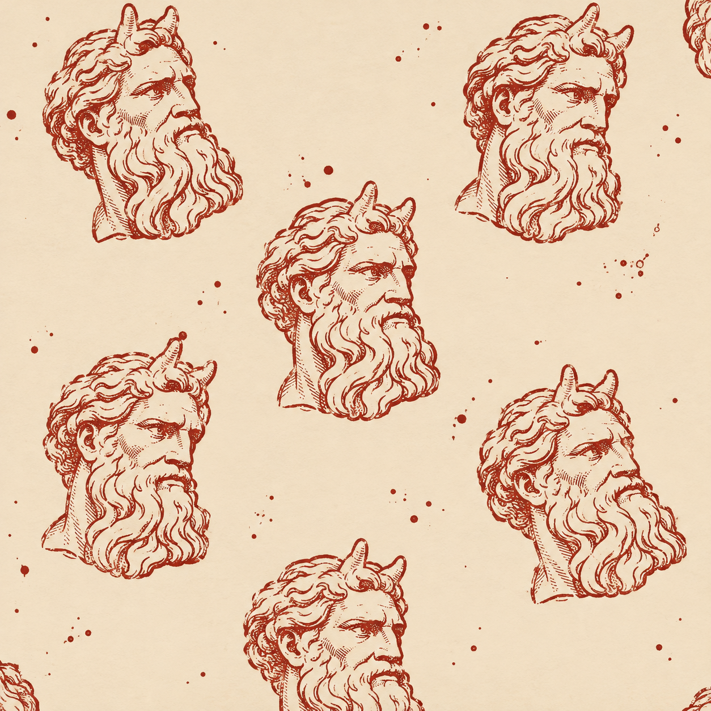
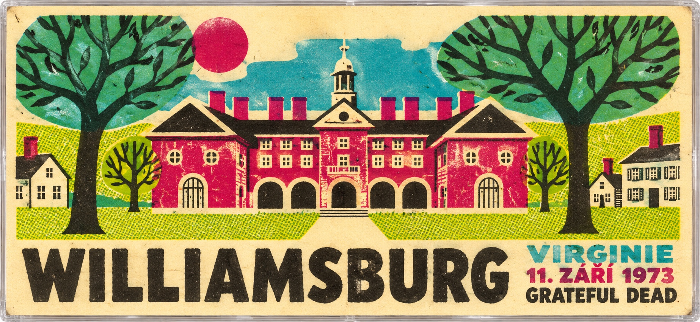
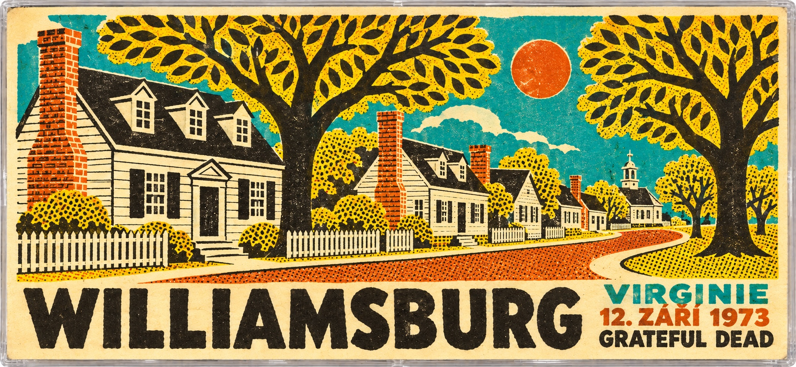
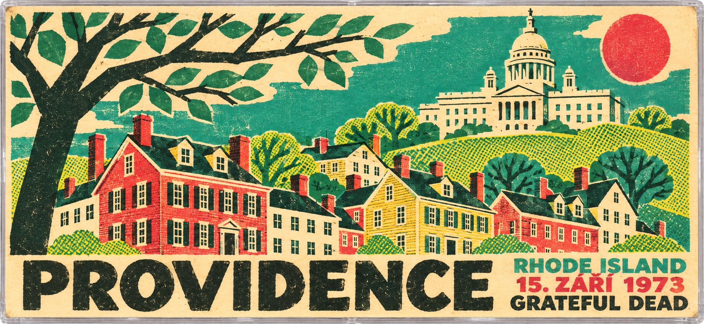
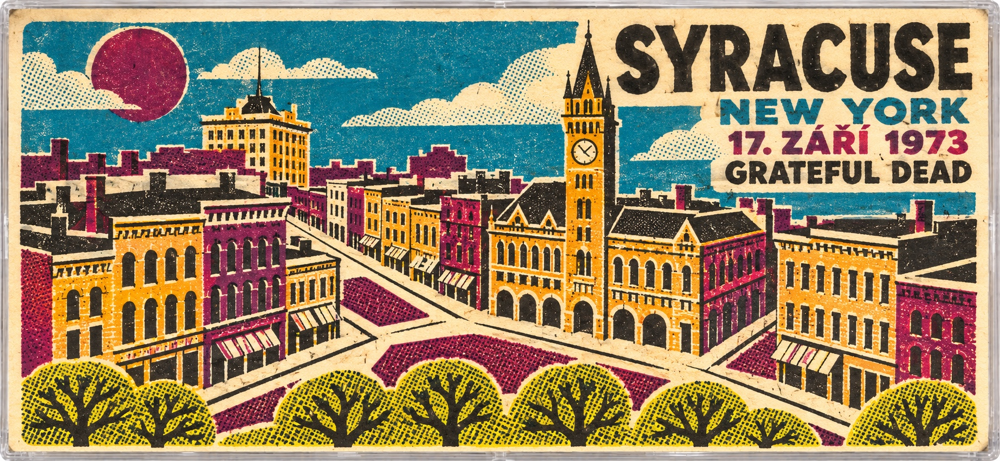
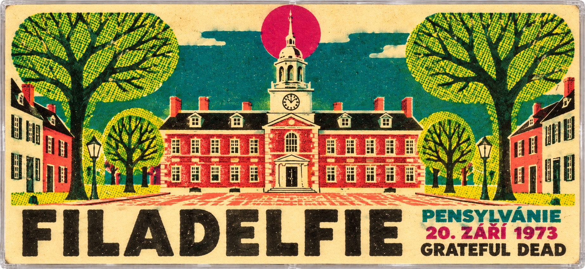
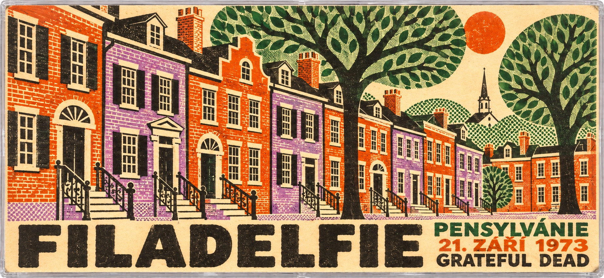
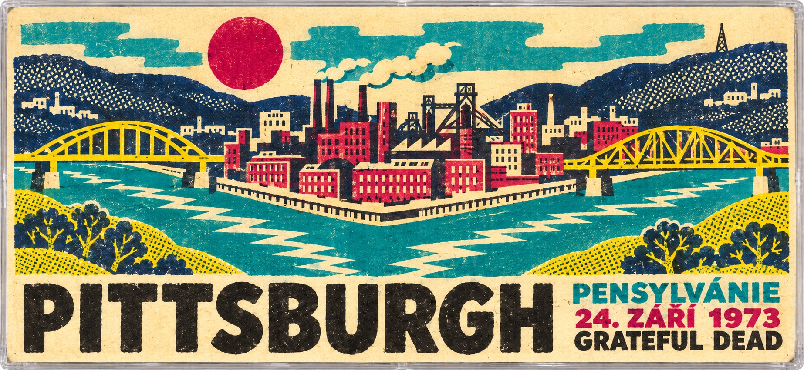
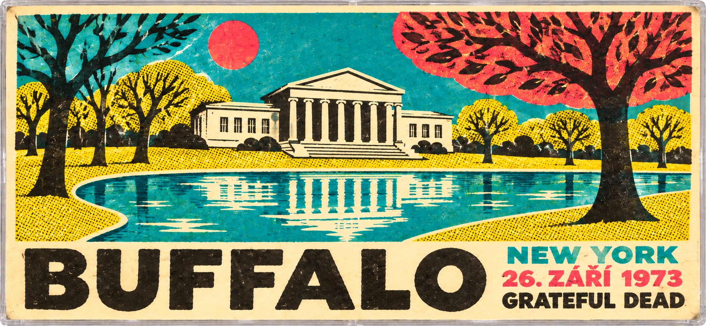

HORNS ’73
The collector portrait is part of XLIIs’ fictional lending-library frame.
Étienne Lambert is a retired conservatory brass teacher who first came across the September 1973 dates on a photocopied tape list at a Brussels record fair in 1994. He was drawn less to rarity than to process: eight shows in which the Dead tried a horn section, adjusted it in public, and then moved on. This Petite Collection follows the experiment from Williamsburg to Buffalo, one night at a time.
In September 1973, the Grateful Dead took a horn section on tour. They had never done it before, and they never did it again. With no known advance announcement, Martin Fierro’s saxophone and Joe Ellis’s trumpet joined the band for eight East Coast shows.
You can hear them finding their way into Eyes of the World, Weather Report Suite and the long improvisations of the second sets. Sometimes the horns follow the song; sometimes they open up another conversation. The experiment lasted just over two weeks.
The app includes a landscape J-card for each of these eight shows.








Listen to Horns ’73 in the XLIIs app.